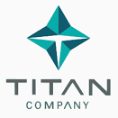

BANNARI AMMAN INSTITUTE OF TECHNOLOGY
Where you learn to
Stay Ahead
Nestled on the banks of The River Bhavani,
BIT campus provides environment for learning
in harmony with nature, away from the odds
of the city life. The spacious and the earth
hugging buildings punctuated with landscaped
courtyards and pathways are designed to
emphasise the business ethics and or
characteristics of an excellent centre for learning.
The Campus hosts well planned academic blocks,
computer centres, lecture halls, libraries, laboratories,
conference halls, staff quarters, hostels and students'
centres. The Campus also houses a co-operative store,
ATM (Axis, SBI and KVB) and a clinic to attend to the
general health of the students and staff.
placements
RECRUITERS
